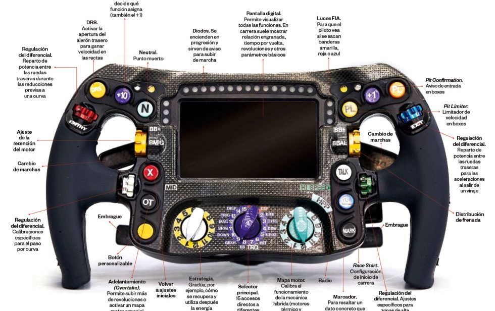
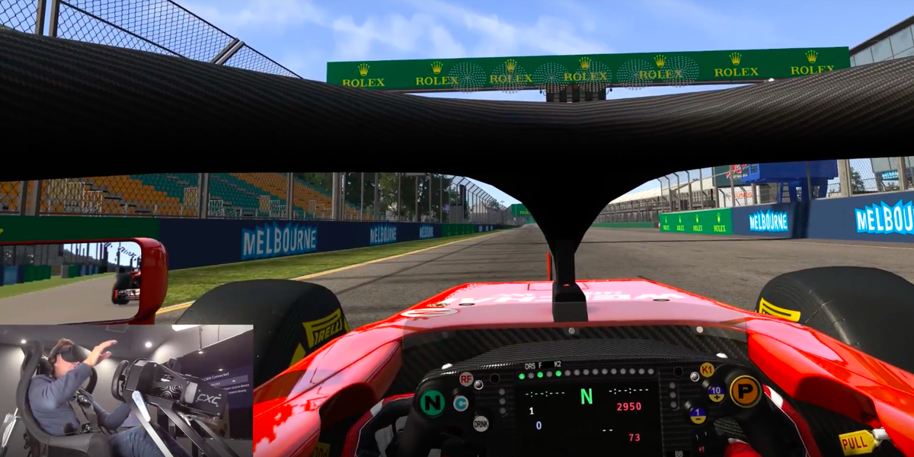
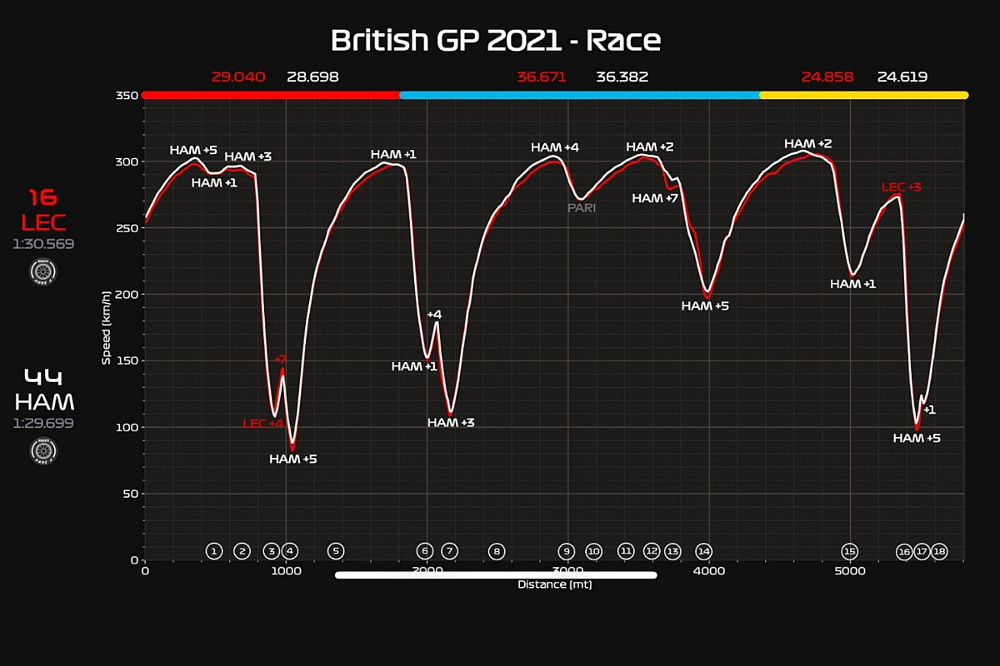

IMÁGENES
VOLANTE F1
POV PILOTO F1
TELEMETRÍA F1
VÍDEOS
AUDIOS
COMPARACIÓN MOTORES V6, V8, V10 Y V12
¿ERES CAPAZ DE ADIVINAR DE QUE CIRCUITO ES ESTA VUELTA RAPIDA DE 2022?
Ayuda: el audio empieza en la ultima curva antes de empezar la vuelta rapida, ademas de estar la reaccion del piloto al final del audio
Si crees que lo has adivinado, escribe el nombre del circuito en el apartado observaciones del formulario y te responderemos al email que hayas adjuntado indicando si has acertado o no.